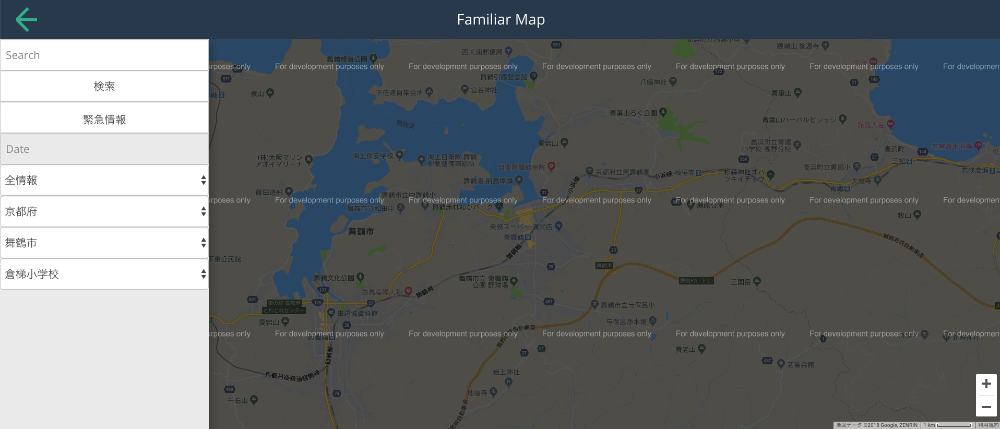

Kanta Demizu
Kyoto, Japan ·
e8222@g.maizuru-ct.ac.jp
NIT.Maizuru College Electrical and Computer Engineering 4th year
Programmer's Community Manager
Skills
Languages, Operating Systems & Tools
- Python
- Swift
- git
- linux
- zsh
- Vim
- Raspberry Pi
- macOS
- Android
Platform Development
- Apache
- NGINX
- MySQL
- Wordpress
Containers & Cloud
Creations
A collection of projects authored by Kanta DEMIZU, and likely shared out with the community as an open source project.
WelICing

dmz_ai

TRY 聴音羽 -聴覚障がい者会話支援システム-

Familiar Map

おだて鏡

Simple Calculator

AudioPlayer

Experience
Programmer's Community
元々コンピュータが好きでプログラムに興味があったため入部．C++を学習し始める
April 2015
第26回全国高専プロコン 長野大会 自由部門
Familiar Map
データベース接続部分を担当
October 2015
Programmer's Community
副部長就任
部のブログ運営を開始
November 2016
第28回全国高専プロコン 大島大会 自由部門
TRY 聴音羽 -聴覚障がい者会話支援システム- (ブロードリーフ企業賞受賞)
Androidアプリケーション作成，Firebaseを使用したチャット画面のUI作成，音声合成・認識APIの実装を担当
October 2017
Programmer's Community
部長就任
チームでの開発を積極的に進める
November 2017
HackU 2018 TOKYO
しらゆき姫
画像処理，音声認識を担当
August 2018
第29回全国高専プロコン 阿南大会 課題部門
WelICing -ICTと「歩く」運動促進システム- (NICT賞受賞，起業家甲子園挑戦権獲得)
データベースサーバー構築，デバイス制御・通信，systemdによるプロセス管理を担当
October 2018
Education
舞鶴工業高等専門学校 - NIT.Maizuru College
電気情報工学科 - Electronic and Computer Engineering
2015 - 2020